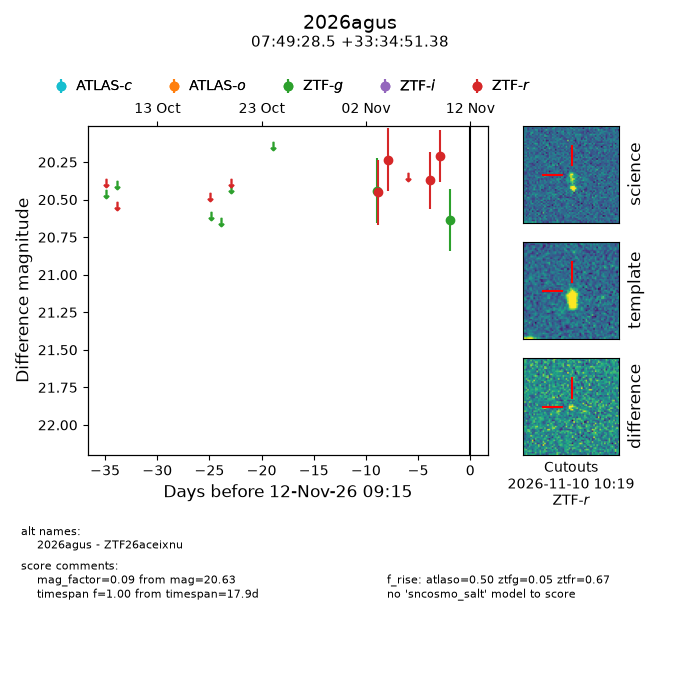
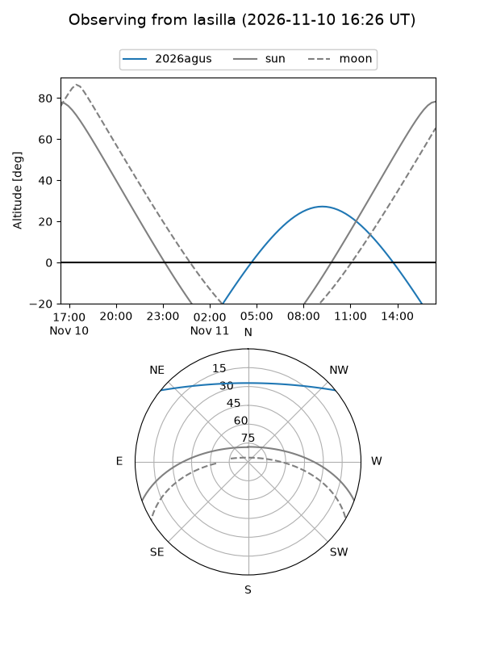
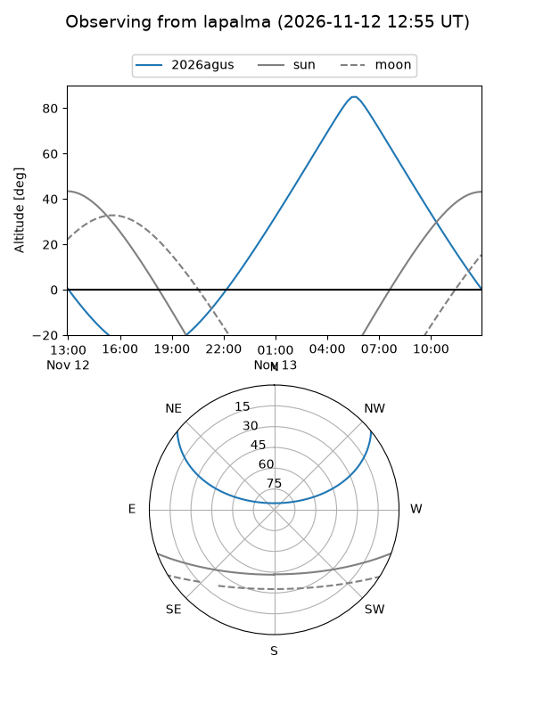
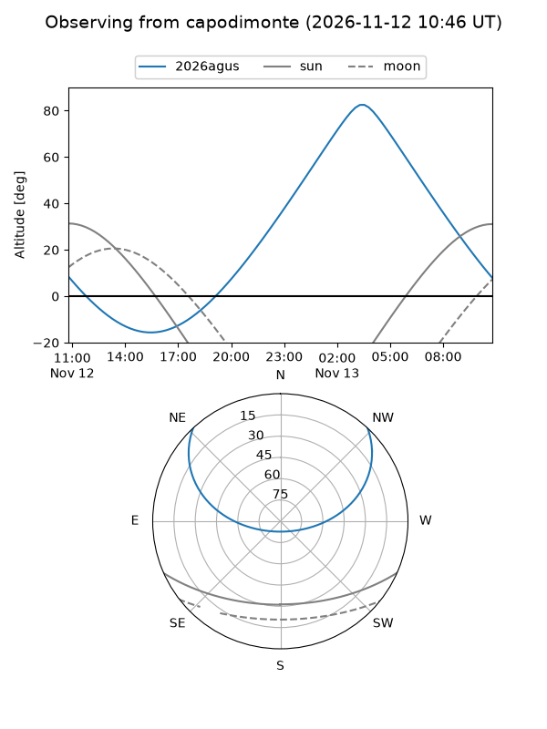
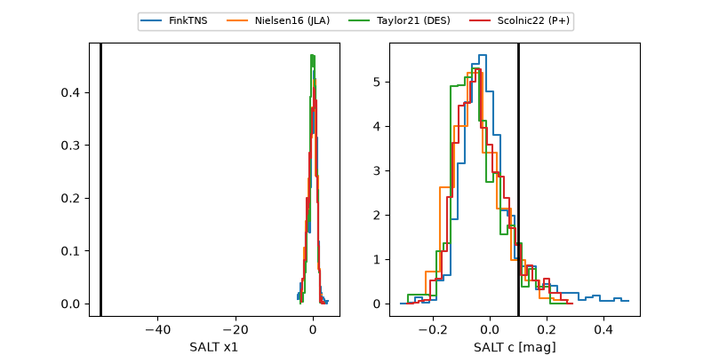

2026agus
Target 2026agus at 2026-11-12 09:20
Aliases and brokers:
FINK-ZTF: ztf.fink-portal.org/ZTF26aceixnu
Lasair-ZTF: lasair-ztf.lsst.ac.uk/objects/ZTF26aceixnu
ALeRCE-ZTF: alerce.online/object/ZTF26aceixnu
YSE-PZ: ziggy.ucolick.org/yse/transient_detail/2026agus
TNS name: wis-tns.org/object/2026agus
Direct TNS query: direct search
alt names
ZTF26aceixnu (ztf,fink_ztf)
2026agus (tns,yse)
Coordinates:
equatorial (ra, dec) = 117.3689,+33.58094
equatorial (HMS+DMS) = 07:49:28.54,+33:34:51.38
galactic (l, b) = (186.7190,+25.97472)
Flags:
peak dt:
Photometry:
last atlaso=nan, ztfg=20.63, ztfr=20.21
1 atlaso, 2 ztfg, 4 ztfr detections
Lightcurve

Visibility



Additional plots
